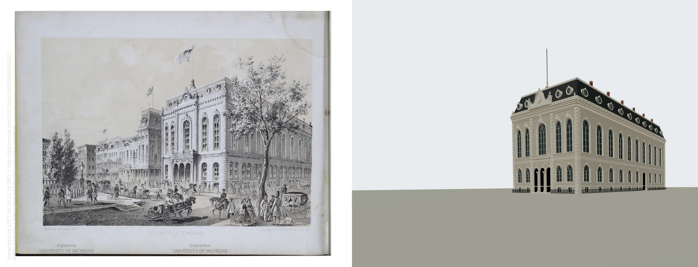
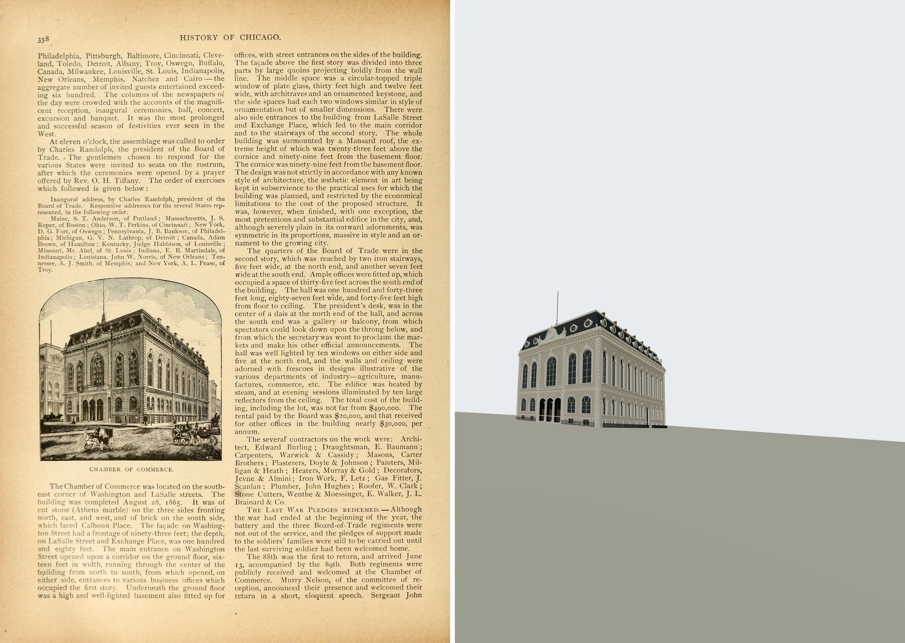
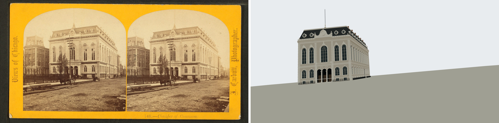

Exterior candidate. All three source comparisons: differs. This is actual generated glTF with source-visible relief and entrance refinements. It is not an accepted photo match or a finished city installation.
Download the self-contained GLB · Build and provenance · Engine-neutral recipe


The 93ft width is reported; 180/181ft depth and contradictory height reports remain explicit. The 24m cornice, grade datum, hidden elevations, material colors and detailed ornament are reconstructed choices. Current comparisons reveal open facade-alignment and profile discrepancies. Source and model pixels have not been painted to resemble each other.
